Class: GIXD503A | Weeks 5 — 6
Assignment: Create a Product Interface in Blender
Angelo Outlaw
Create a Product Interface in Blender: Week 5
Place your Goodreads dashboard in an environment where a person would reasonably use it.
Resources
Scene: Study Room - Game Engine (did not use)
Process
For this project, I decided to use a library as a place that someone might access their Goodreads website from. In this scenario, a person is trying to decide what books they will check out next, and they will use their dashboard to make recommendations. Then they will see if any of the recommended books are available at the library branch they are at.
I started by looking for a scene that I could place the content in. I really wanted to find something that wasn't just an image, but a full interactive scene. I found sone on Blendswap.com, but they had pieces missing and/or weren't working like the sample picture showed at the time of download. Still, I think this is a good place to start. I can work with what was given and modify the materials and lighting to get it to a place where I want.
I used the Library Setting, made some modifications to the lighting by turning the intensity of the area lights up to 3000, then added the Mac Laptop onto one of the tables.
Results
I tried rendering each of the final images two different ways so that I could compare them.
- EVEE at 1024 samples
- Cycles with GPU Compute at 1024 samples
Close-up
Click or drag across the image to compare Cycles (left) with EEVEE (right).
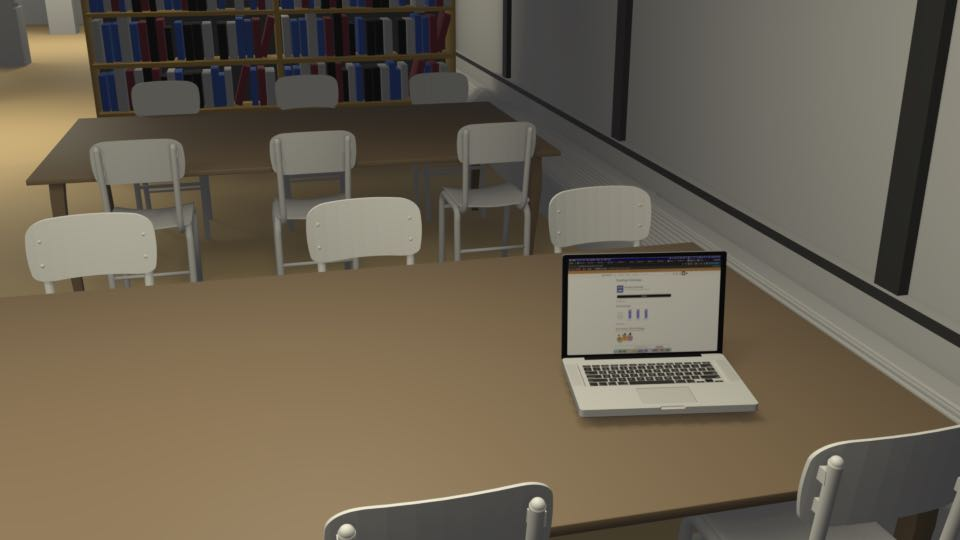
EEVEE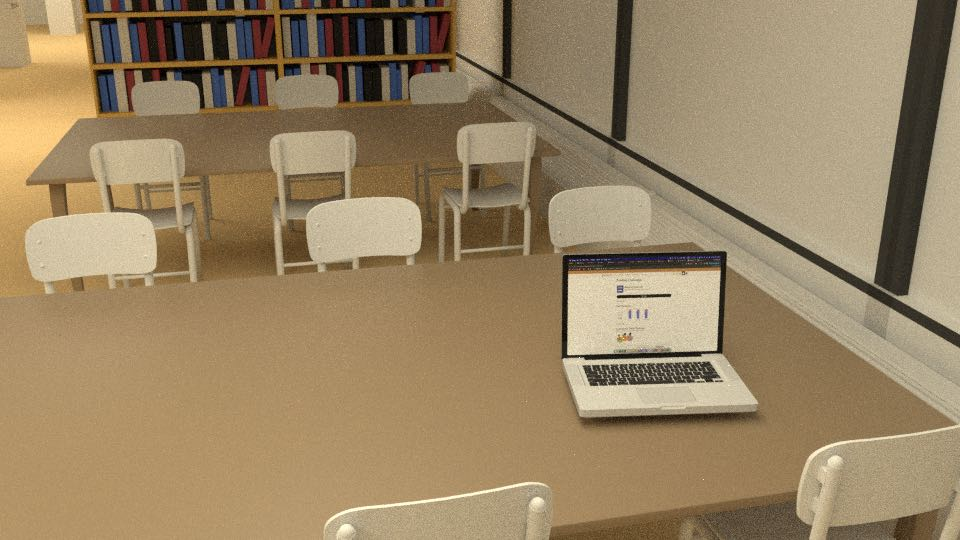
CyclesWide Angle
Click or drag across the image to compare EEVEE (left) with Cycles (right).
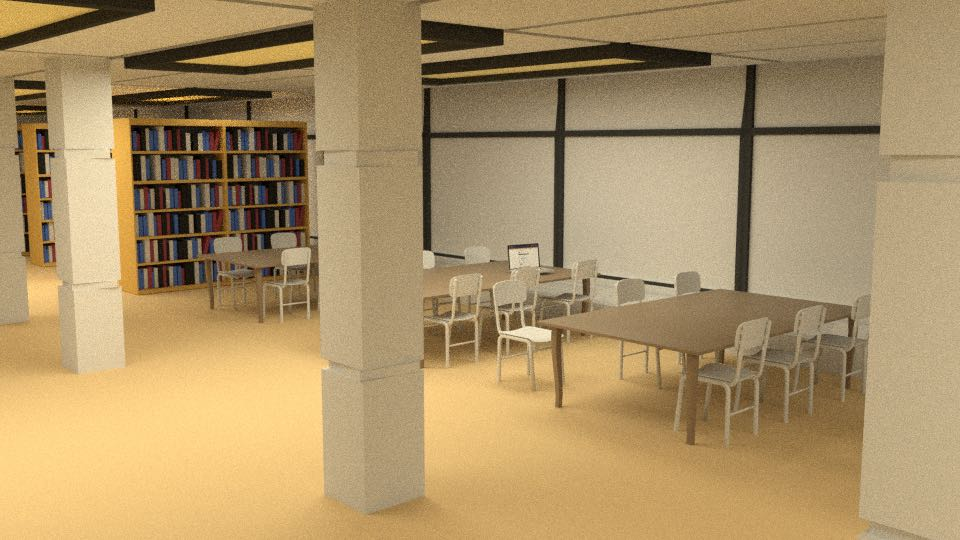
Cycles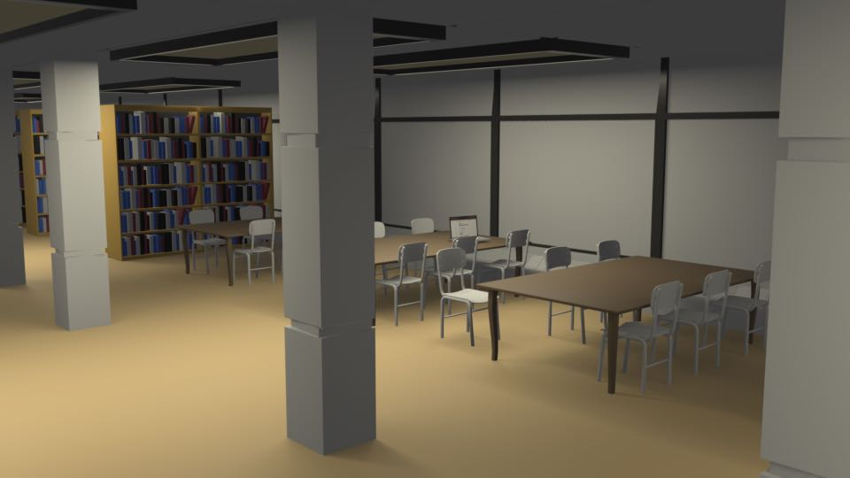
EEVEEZoomed Out
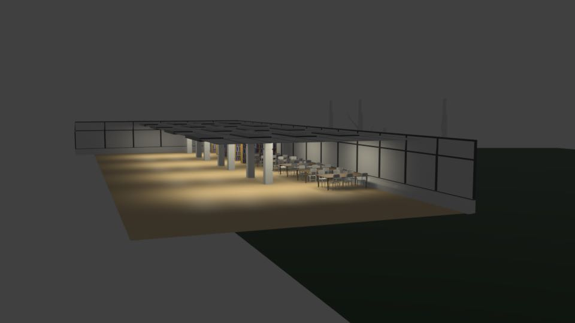
Questions
I tried applying a wood texture from the Procedural Materials pack to the library tables and the color worked, but the texture didn't seem to come through. Why?
Why didn't the lights and textures work when I opened the original scene file that I had downloaded? It seems like maybe some linked image files were missing?
Create a Product Interface in Blender: Week 6
In the second week of this project, I focused on refining what I had started with, resolving some texture issues on the space that I downloaded, and adding some additional elements, improved textures, and lighting effects. I also spent some time removing parts of the scene and materials that did not apply so that I could keep my file clean.
Resources
- Polyhaven > Textures > Dirty Carpet
- Polyhaven > Textures > Oak Veneer 05
- Polyhaven > Textures > Plastered Wall 04
- Polyhaven > Textures > Grass Medium 01
- Polyhaven > Textures > Bark Brown 01
- Polyhaven > Textures > Plastered Wall
Challenges / Observations
After last week, I knew I would be working against several challenges that I was unable to resolve and had kicked to a later milestone.
The biggest, and most frustrating of these was that many of the links to the textures that were used in the scene that I downloaded were broken or not working properly. To make it worse, when I added textures, I could only see a color applied rather than the texture itself. After several hours of trying to diagnose, I referred the problem to Claude.ai, which quickly identified that the object did not have UV maps applied. So when I would add a texture, it would only find and render the color of the first pixel it saw from the texture. Once this was resolved, I was able to start adding textures.
Using Arrays
Another thing I noticed was that the scene made efficient use of arrays, which duplicate elements multiple times to create many-from-one. An example of this was the way the floor was laid out. It used a single large floor tile, which was duplicated along the X-axis, then again along the Y-axis, to create a multiplicative effect. Let's look at how I did this with the carpet.
Step 1: Create the carpet plane, apply the Dirty Carpet texture.
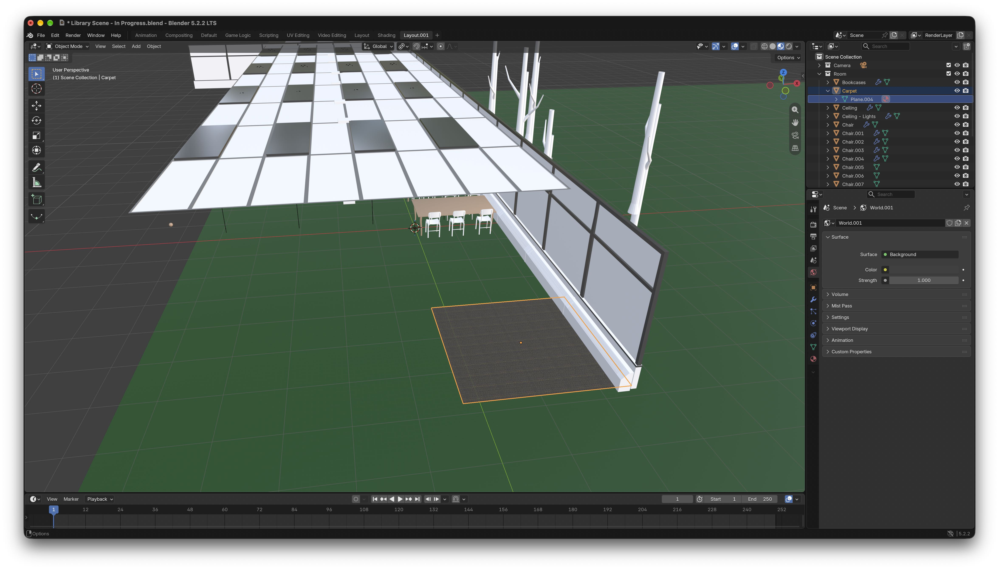
Step 2: Generate an array from the carpet object by selecting the carpet and choosing Modifier > Generate > Array.
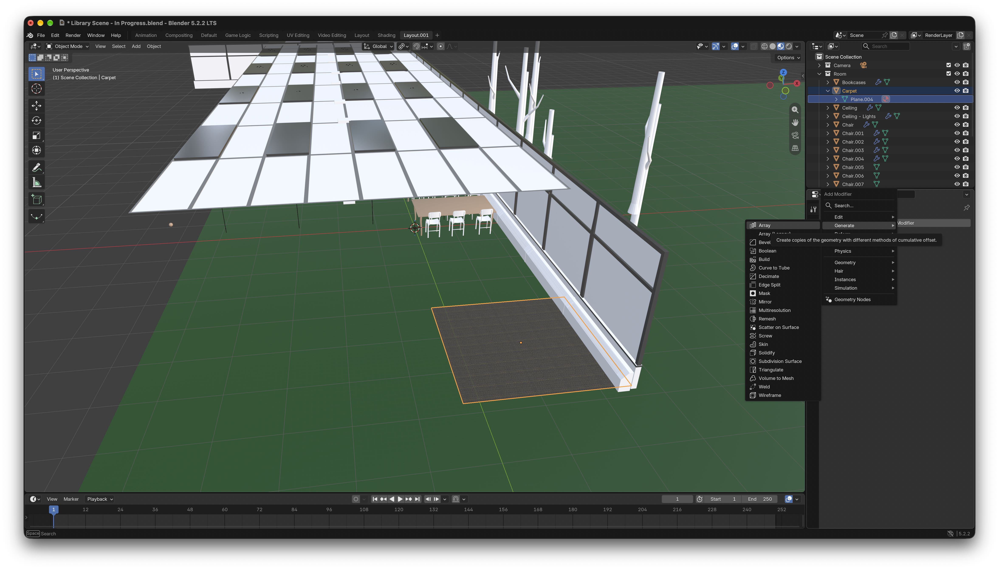
Step 3: Duplicate your object across a single axis. In this case I used the X-axis.
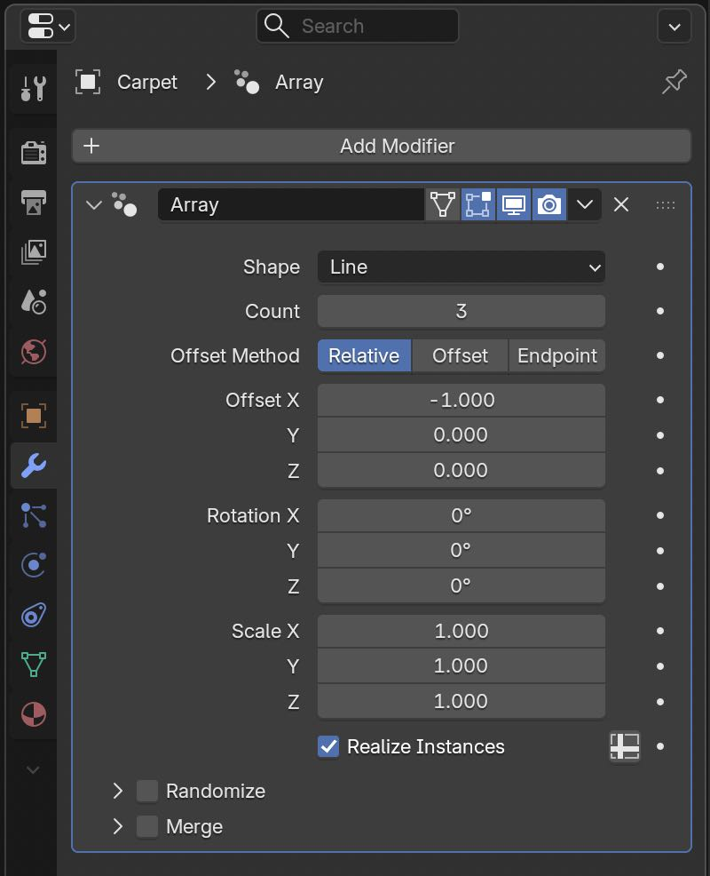
Step 4: Note here that the carpet object is now duplicated.
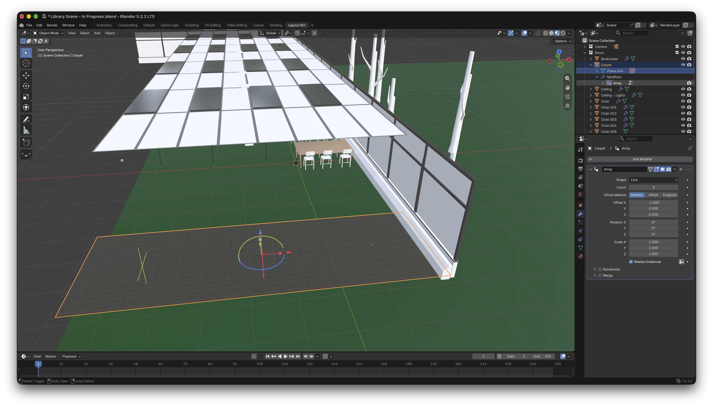
Step 5: With the object still selected, now apply a second array modifier along the Y-axis.
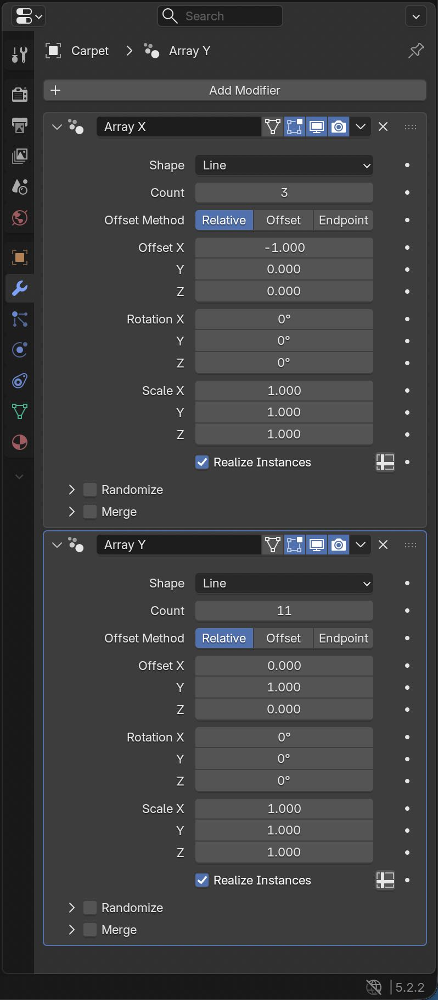
Step 6: Note the second array applies itself to the results of the first array, creating a building multiplicative effect to complete the coverage of the entire scene.
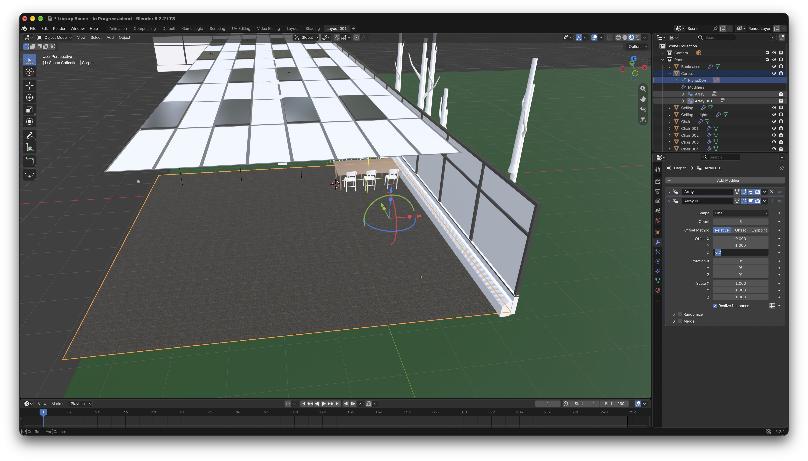
Something else worth noting regarding arrays is that anything you do to change the original object is applied to all duplicate objects in the array. So if you plan it right, you can efficiently change a large number of objects by updating the ‘master’.
Applying the Same Texture at Different Angles
When applying the same texture to an object with very different angles, it was necessary to change the UV mapping for those other angles. A good example of this is the tables in this scene. The texture applied to the table surfaces did not look good when it was horizontally applied to the vertical table legs. I manually selected the table legs, and adjusted the UV mapping on just that part of the object.
Note how the texture is applied horizontally to the vertical table legs. Not a good look.
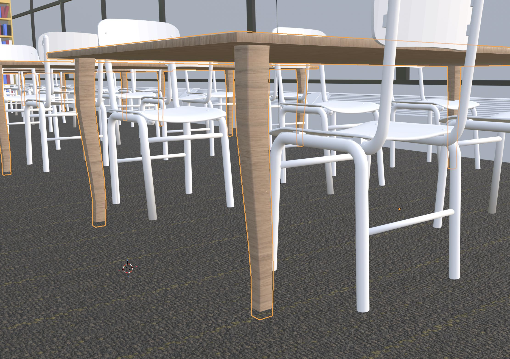
In Edit Mode, I selected only the faces of the table legs.
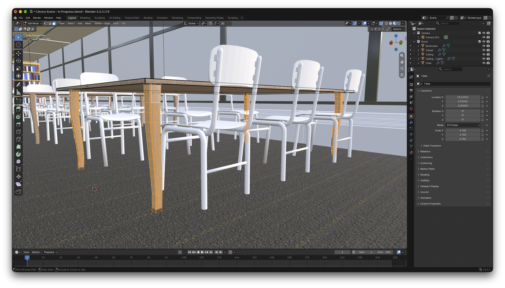
By selecting only the faces of the legs of the table object, I was able to rotate the texture on those pieces by 90 degrees without having to separate them from the merged table object.
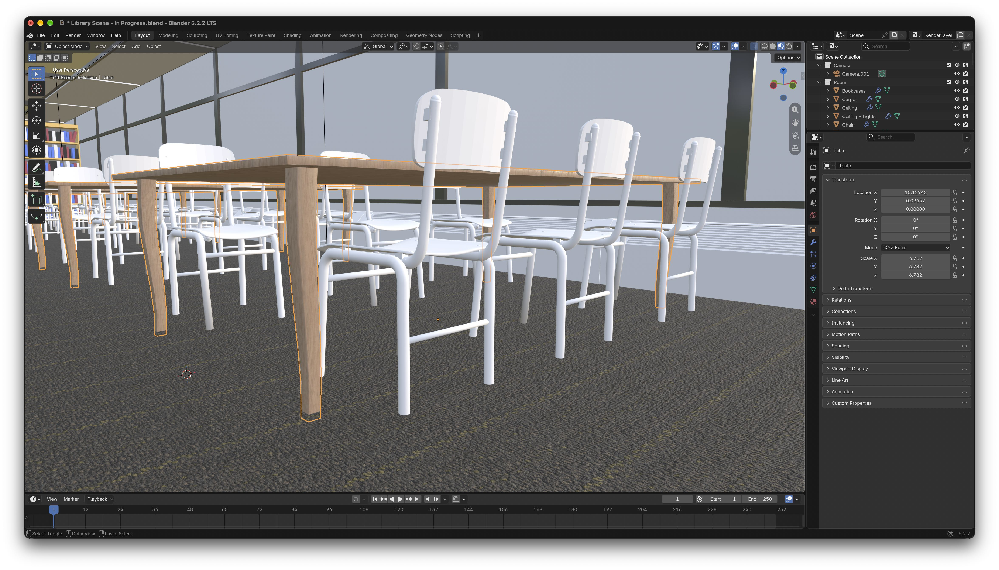
Adding Emission Effect to Laptop Screen
Last week I had applied a screenshot of the Goodreads website to the MacBook Pro on the table, but it looked fake because the laptop screen didn't appear to be a source of light. After some trial and error, and a little help from Claude.ai, I was able to add a material to the screen with an emission effect that makes it look like the screen is providing its own light. I managed to do this without sacrificing the look of the screenshot by applying a separate material to the same object face.
You can see before | after the emission effect was applied below by moving the slider on the image.
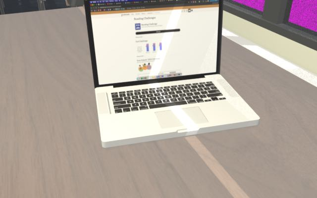
BeforeOther Improvements
- Added transparency to the faces of the wall that were supposed to be glass. I used 60% transparency and applied a dark color to the surface, and a high reflectivity to make it look like tinted glass.
- I expanded the plane outside the windows and added a grass texture from week 4.
- Added a bark texture to the trees outside so that any incidental views outside of the windows would have at least some context. There is plenty of room for improvement here, even to the level of creating a full garden.
- I added a similar, but more powerful emission effect to the overhead lights to make them appear to glow too. Note that they are not the source of the area lights, which are separate.
My Computer is Woefully Underpowered
I am working with a 2023 M3 iMac with 16GB of RAM and integrated GPU. This seemed fast when I got it. Handbrake, for example, renders movies at alternate resolutions in half the time that it used to on my older computer. But rendering any serious animations or graphics from Blender would take some more dedicated/serious horsepower. Sadly, I cannot afford a $10,000 Mac. But one can dream!
Final Render
I had to strike a balance between quality and speed with the final render. With my original high quality settings, the render for 150 frames was set to take between 10-24 hours. Too much!
Time to render: 1hr:30min @ 50% size.
Render Settings
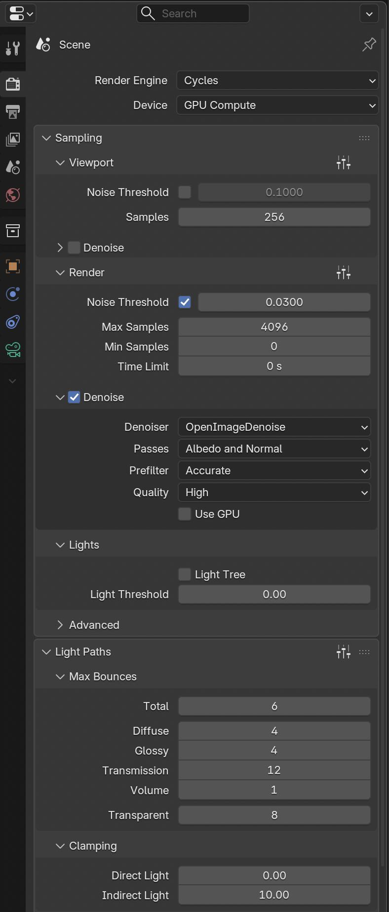